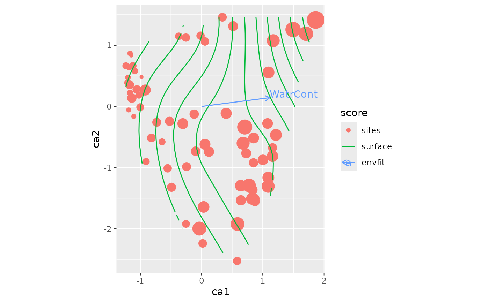

Function adds vegan::ordisurf() results to an graph.
Arguments
- object
vegan::ordisurf()result object.- fill
Use filled ordination space where raster colour match the fitted values of the surface (logical).
- contour.params, fill.params
Arguments passed to
ggplot2::geom_contour()or toggplot2::geom_raster(), respectively.- ...
Other arguments passed both to
ggplot2::geom_contour()andggplot2::geom_raster().
Details
Function draws contours of fitted vegan::ordisurf() surface and
(optionally) a raster of the surface using ggplot2::geom_contour()
and ggplot2::geom_raster().
Function uses gridded values of ordination plane saved within the
vegan::ordisurf() result instead of scores data from an
ordination object. Therefore its results can be added to any
ordination graph, also from autoplot methods. However, you must
be careful with using exactly the same axes and scaling in
vegan::ordisurf() object and ordination.
Surface fill is non-transparent and will paint over all previous
layers. Filled surface should be used before other visible layers,
or fill should be made transparent with alpha in argument
fill.params passed to ggplot2::geom_raster().
Examples
library(vegan)
library(ggplot2)
data(mite, mite.env, package="vegan")
mod <- cca(mite)
surf <- ordisurf(mod ~ WatrCont, mite.env, plot = FALSE)
ordiggplot(mod) +
geom_ordi_point("sites", size = mite.env$WatrCont/100) +
autolayer(surf) +
autolayer(envfit(mod ~ WatrCont, mite.env, permutations=0),
arrow.mul = 1.3)
